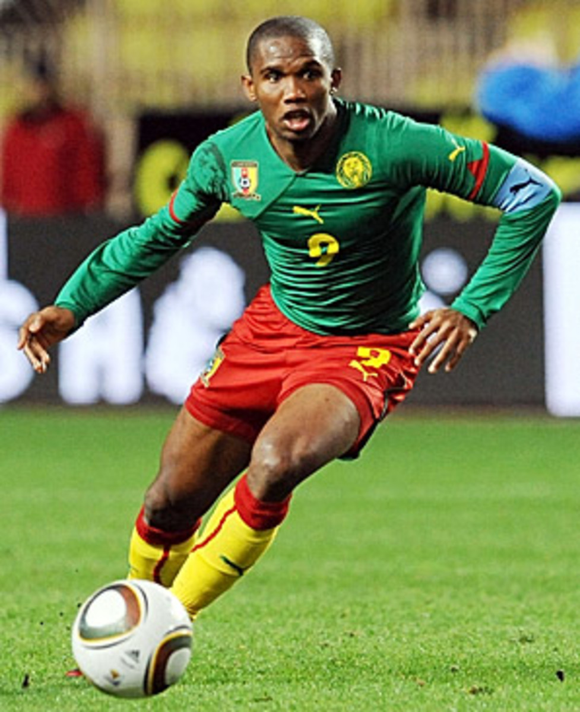

The sport of soccer (called football in most of the world) is considered to be the world's most popular sport. In soccer there are two teams of eleven players. Soccer is played on a large grass field with a goal at each end. The object of the game is to get the soccer ball into the opposing team's goal. The key to soccer is that, with the exception of the goalie, players cannot touch the ball with their hands, they can only kick, knee, or head the ball to advance it or score a goal.
About Eto'o

After over twenty years as a player,
Samuel Eto’o has announced his retirement.
Eto’o played for 11 teams and won 18 club
and national team trophies and numerous
individual awards. He scored 426 goals in
877 matches and retires holding the record
for the most goals goals in the African Cup
of Nations and is Cameroon’s all-time leading scorer.
He is one of the best players that Africa has
ever produced and one of the truly great strikers
of the 21st century. He had pace and strength,
he was a tremendous finisher from short-range
and from distance, and he was just as likely
to create a chance as he was to score a goal.